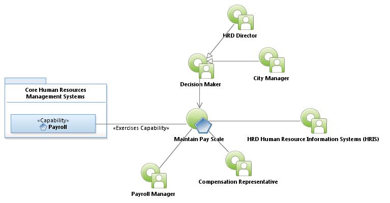
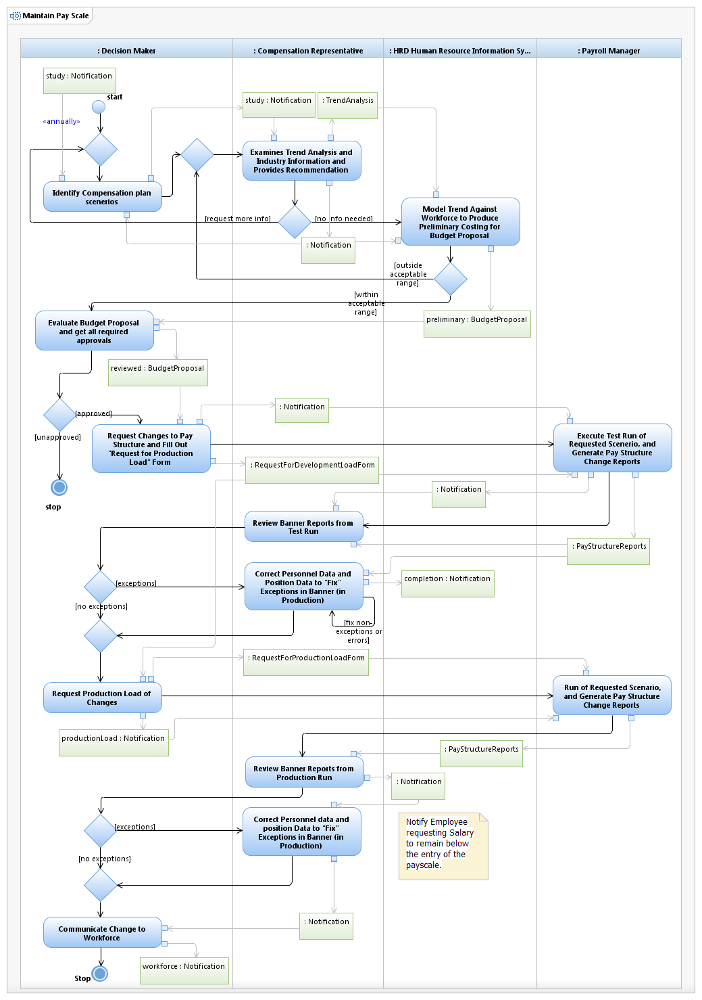

Use Case Model: Maintain Pay Scale
Architect: Aaron Brown, IT Enterprise Architect Senior
Date Last Modified: 3/7/2013
User Review: Holly Moyer, Jim Benes, Tommy Tucker
Date: 3/7/2013
Review and access to determine if hourly rate should be revised, based on market information or other pay trends in the industry.
Follow link to Role Definitions

Use Case Model: Maintain Pay Scale

Activity Model: Maintain Pay Scale